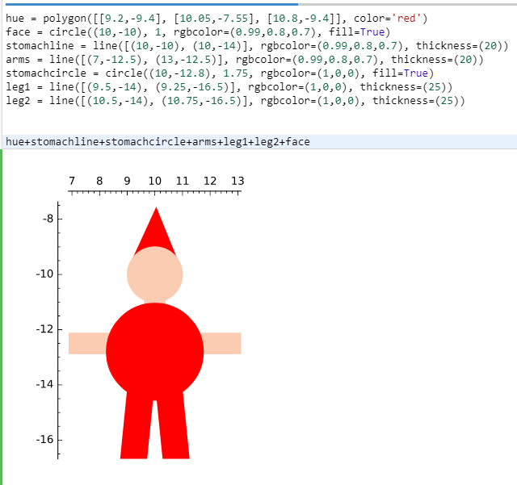

Sagemath
Da vi havde brugt meget tid og resurser på opgaven computerens anotomi, har vi ikke haft meget tid til at lave denne opgave, Carl nævnte at vi skulle bruge en time på produktet og en time på Rapporten.
Kravspecifikation
- En hyggelig figur
- Skal ligne en julemand
- Som har et formål
Design
Designet er meget enkelt,
Målgruppe:
Målgruppen er til alle, som er i julestemning.
Budskab:
Budskabet i vores project er at få folk i julestemning. Og derved opretholde
Implementering
Fremgangsmåde:
- Opstat af project
- Programmering af produkt
- Projet skrivning og raport
- Rettelser
- Aflevering
Alt dukomentation er skrevet direkte i Notepad++, og uploadet til serveren efter hvert modul.
Afprøvning
Afprøvningen af produktet gik godt, der er ikke nogle problemer med programmet.
